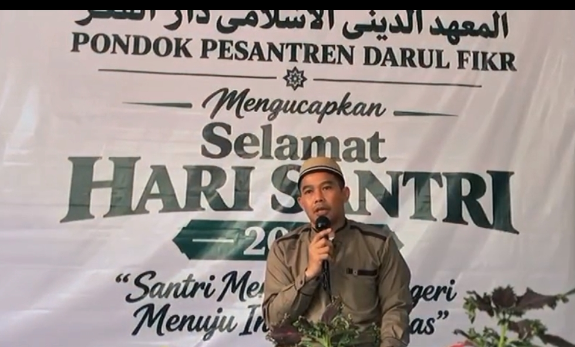

MTs Al-Fikr Cianjur Singkut
Berdiri Tahun 2011
Madrasah Tsanawiyah yang menyelenggarakan pendidikan jenjang menengah pertama dengan perpaduan ilmu pengetahuan umum dan keagamaan.

RW 07 Cianjur Singkut
Yayasan Darul Fikr Singkut Berkomitmen Menghadirkan Pendidikan Islam yang Berkualitas, Mandiri, dan Berakhlakul Karimah.
Jelajahi Lembaga PendidikanDokumentasi Yayasan
Dokumentasi kegiatan pendidikan, pembinaan santri, dan aktivitas keagamaan Yayasan Darul Fikr Singkut.

Kegiatan Yayasan

Kegiatan Pendidikan

Kegiatan Khataman
Mengenal Kami
Yayasan Darul Fikr Singkut didirikan pada tahun 2016 atas dasar dukungan dan aspirasi masyarakat yang mengharapkan hadirnya lembaga pendidikan Islam yang lebih dekat, mudah dijangkau, serta terjangkau dari segi biaya.
Keberadaan yayasan ini diharapkan dapat memberikan kesempatan yang lebih luas kepada masyarakat, khususnya anak-anak dan generasi muda di lingkungan Singkut dan sekitarnya, untuk memperoleh pendidikan yang layak tanpa terkendala jarak maupun kemampuan ekonomi.
Dengan semangat kebersamaan dan kepedulian terhadap pendidikan, Yayasan Darul Fikr Singkut berkomitmen untuk ikut berperan dalam mencerdaskan generasi bangsa, membangun karakter Islami, serta menanamkan nilai-nilai keagamaan dan akhlakul karimah.
Unit Pendidikan
Yayasan Darul Fikr Singkut menaungi lima lembaga pendidikan yang berkomitmen memberikan pelayanan pendidikan dan membangun generasi berilmu, beriman, serta berakhlakul karimah.
Berdiri Tahun 2011
Madrasah Tsanawiyah yang menyelenggarakan pendidikan jenjang menengah pertama dengan perpaduan ilmu pengetahuan umum dan keagamaan.
Berdiri Tahun 2018
Raudhatul Athfal Darul Fikr merupakan lembaga pendidikan anak usia dini berciri khas Islam yang menanamkan dasar keimanan, akhlak, dan kemandirian.
Berdiri Tahun 2019
Lembaga pendidikan Al-Qur'an yang membimbing generasi muda agar mampu membaca, memahami, dan mencintai Al-Qur'an.
Berdiri Tahun 2023
Madrasah Aliyah yang menyelenggarakan pendidikan jenjang menengah atas dengan penguatan ilmu pengetahuan dan nilai-nilai Islam.
Berdiri Tahun 2024
Lembaga pendidikan Islam berbasis pesantren yang berfokus pada pembinaan ilmu agama, ibadah, kedisiplinan, dan akhlakul karimah santri.
Aktivitas Yayasan
Kegiatan pendidikan dan pembinaan dilaksanakan melalui unit-unit pendidikan sesuai jenjang dan kebutuhan peserta didik.
Kegiatan belajar mengajar yang mengembangkan pengetahuan, keterampilan, dan karakter peserta didik.
Pembiasaan membaca dan mencintai Al-Qur'an serta penguatan dasar-dasar keislaman.
Pembiasaan ibadah, kedisiplinan, sopan santun, dan perilaku terpuji dalam kehidupan sehari-hari.
Kegiatan keislaman dan pembinaan kebersamaan di lingkungan lembaga pendidikan dan masyarakat.
Hubungi Kami
Untuk informasi lebih lanjut mengenai yayasan dan unit pendidikan, silakan menghubungi pengelola.